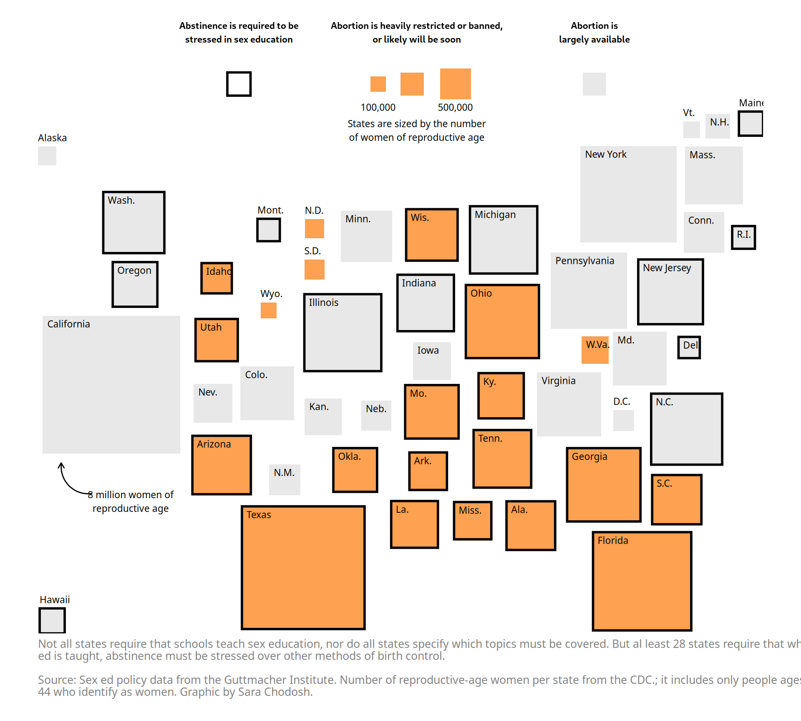
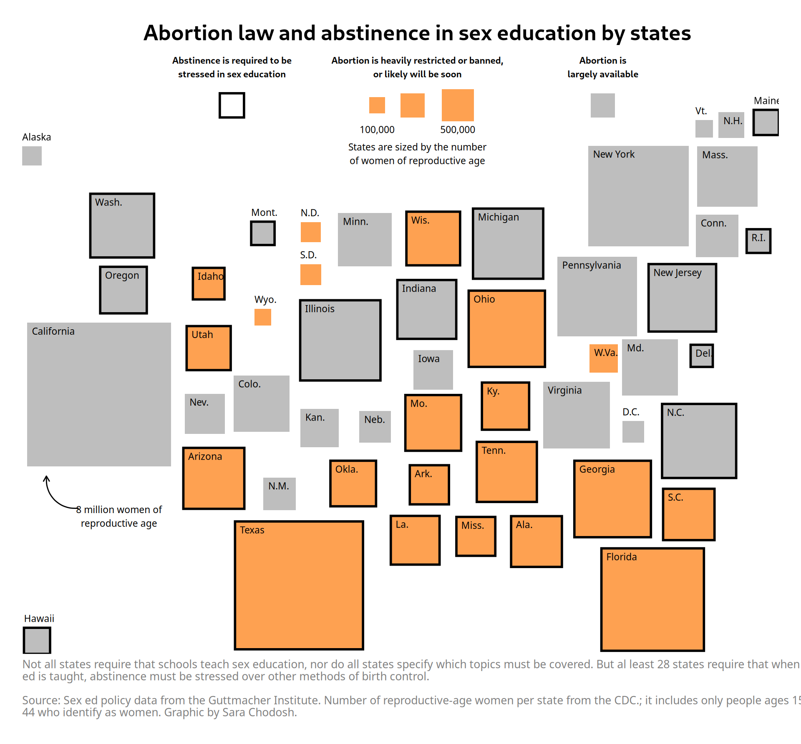
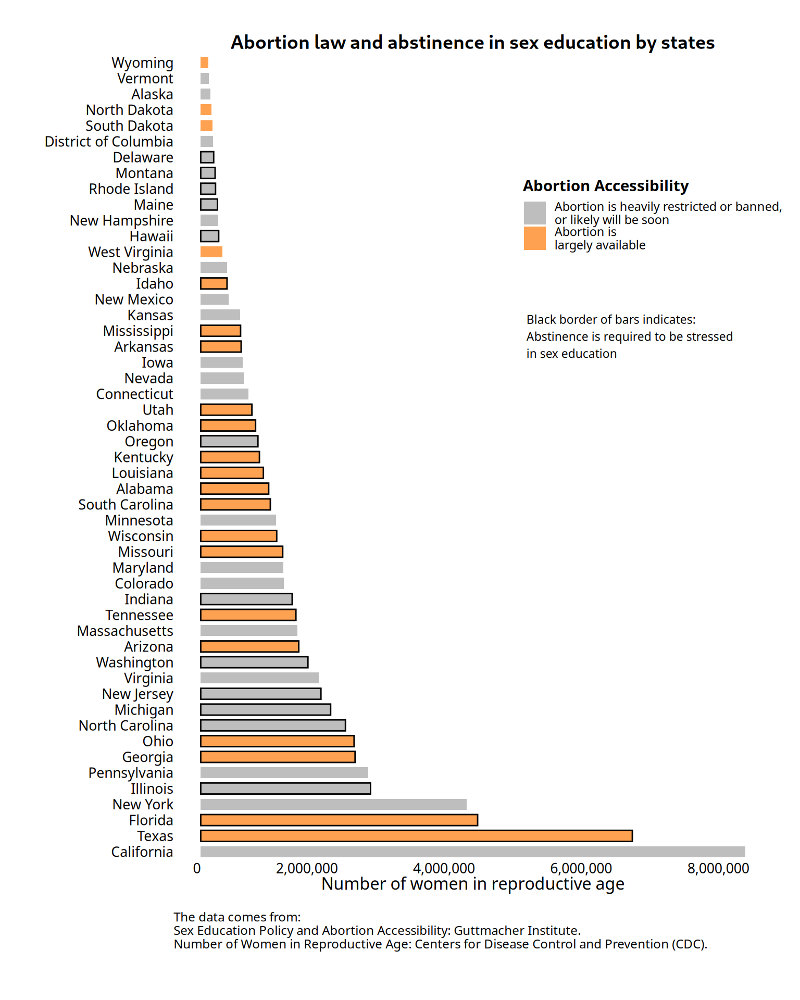

Below is an analysis and replication of the graph by Sara Chodosh, originally published in The New York Times, which examines the relationship between abstinence-focused sex education requirements and abortion access restrictions across U.S. states.
The graph done by Sara Chodosh was published in The New York Times and its objective is to analyze if there is any relationship between states requiring that abstinence is stressed in sex education and states restricting access to abortion. Two weeks before the verdict for Roe v. Wade that eliminated the constitutional right to an abortion, The Times Opinion section published the graph. The graph uses a Demers cartogram to size each state based on the number of women of reproductive age, offering a visual representation of the relationship between the two variables.
The data for this reproduction comes from:
The variables in the dataset include:
To create the graph, the R programming language was used, with the ggplot2 and extrafont library for data visualization. Below is an explanation of the key steps and components.
Libraries necessary for the project:
Fonts necessary for the project:
Reading the data:
data_graph <- readxl::read_excel("./data graph xy final 2.xlsx")The code begins by creating a new dataset. First, the values of the x and Y coordinates are scaled down by multiplying them by 0.8. This adjusts the positions of the data points, making them smaller or more compact on the plot. Then, a new column called side_length is created by calculating the square root of the Women_Reproductive_Age column. This represents the side length of a square whose area is proportional to the number of women of reproductive age in each state. The idea is that larger populations will have larger squares, which will be useful for visualizing the data with different sized tiles. Next, another new column called border_color is created using the ifelse() function. This column determines whether the border of a square should be black or not. If the value of Abstinence_Required is TRUE, meaning that abstinence must be emphasized in sex education, the border color is set to black. If Abstinence_Required is FALSE, the border color is set to NA, meaning no border will be drawn.
The {r} specifies that the chunk contains R code, while fig.width and fig.height control the size of the resulting plot in inches. Specifically, fig.width=10 sets the figure’s width to 10 inches, and fig.height=9 sets its height to 9 inches. Together, these options ensure the visualization fits appropriately into the document and is clear and visually appealing.
The placement coordinates were obtained from mobilefish.com to ensure accurate alignment. Fill colors indicate abortion accessibility - orange for restricted or banned access and gray for largely available access. What is more, the black borders were included - states that require abstinence in sex education are outlined in black (Abstinence_Required == TRUE). States without this requirement have no border. The border color legend is customized using scale_color_identity().
The color of the squares depends on the Abortion Accessibility variable (fill). “Restricted” is orange (#FEA151) and “Available” is grey (#E8E8E8). scale_fill_manual customizes the square colors for the two levels of abortion accessibility.
Names of the states are displayed in the upper-left corner of each square for clarity. However, some of them must have been placed outside the square because of its size. In order to do this a condition for inside/outside names of states was created. A new variable was added indicate whether the state is “inside” or “outside” the main grid of squares in the visualization. It helped to adjust text placement and visibility in the final visualization.
The caption below the graph was also added to provide context about the data sources and visualization. theme_void() removes gridlines, axes, and unnecessary elements for a clean, minimalist appearance. legend.position = “none” hides the legend because the annotations explain the categories clearly. Margin and caption styling was also included in the code. White background for the whole graph was set. The plot’s overall visual design is finalized by fixed aspect ratio that was maintained so that the squares are proportional and not distorted.
Annotations added explanatory text, squares for legend and arrow to the chart (for example numbers indicating population thresholds). The legend in this graph was replaced by annotations with annotated tiles. Moreover, text annotation highlights a specific data point (8 million women) and curve annotation draws a curved arrow pointing to the relevant square.
Additionally, the font used in the plot has been carefully chosen with the help of the extrafont package to match the original design as closely as possible. The font, such as “Nirmala UI,” was selected to replicate the appearance of the source graphic, enhancing the visual similarity to the reference while maintaining a clean and professional aesthetic.
Below you can find the whole code for the replica.
ggplot(data7) +
# Squares with borders (depending on Abstinence_Required)
geom_tile(aes(
x = x,
y = Y,
fill = Abortion_Accessibility, # Fill color based on abortion accessibility
width = side_length,
height = side_length,
color = border_color # Border color determined by Abstinence_Required
), size = 1) + # Thicker border to enhance the visibility
# Add state names inside the squares in the upper-left corner
geom_text(aes(
# positioning based on size, but you can adjust for specific states too
x = x - side_length / 2 + ifelse(inside, 3, 0),
y = Y + side_length / 2 + ifelse(inside, -3, +8),
label = Name # Place state names
),
size = 3, # Slightly larger text size for better readability
color = "black", # Set text color to black for contrast
hjust = 0, # Align text to the left
vjust = 1, # Align text to the top
fontface = "plain", # Non-bold text
family = "Nirmala UI Semilight"
) +
# Customizing the fill for abortion accessibility
scale_fill_manual(
values = c(
"Restricted" = "#FEA151", # Orange
"Available" = "#E8E8E8" # Grey
)
) +
# Customizing the border color legend
scale_color_identity(
name = NULL, # Remove default legend title
labels = c("Black border: Abstinence is required\nin sex education"), # Cleaned label
guide = guide_legend(
override.aes = list(
size = 7, # Set size of legend squares
shape = 15 # Use square shapes in the legend
)
)
) +
# Title, subtitle, and caption
labs(
caption = "Not all states require that schools teach sex education, nor do all states specify which topics must be covered. But al least 28 states require that when sex\ned is taught, abstinence must be stressed over other methods of birth control.\n\nSource: Sex ed policy data from the Guttmacher Institute. Number of reproductive-age women per state from the CDC.; it includes only people ages 15 to\n44 who identify as women. Graphic by Sara Chodosh."
) +
# Theme to remove gridlines and axis, and add proper styling
theme_void() + # Clean background without gridlines or axes
theme(
legend.position = "none",
plot.caption = element_text(size = 10, family = "Nirmala UI Semilight",
hjust = 0, color = "gray50"),
plot.margin = margin(20, 20, 20, 20), # Add spacious margin around the plot
panel.background = element_rect(fill = "white", color = NA), # White background
plot.background = element_rect(fill = "white", color = NA)
) +
coord_fixed(expand=0) +
annotate("text", x = 255, y = 830,
label = "States are sized by the number\nof women of reproductive age",
color = "black", size = 3, family = "Nirmala UI Semilight") +
annotate("text", x = 280, y = 845, label = "500,000", color = "black",
size = 3, family = "Nirmala UI Semilight") +
annotate("text", x = 230, y = 845, label = "100,000", color = "black",
size = 3, family = "Nirmala UI Semilight") +
annotate("text", x = 140, y = 900,
label = "Abstinence is required to be\nstressed in sex education",
color = "black", size = 3, fontface = "bold", hjust = 0.5, vjust = 1,
family = "Nirmala UI") +
annotate("text", x = 255, y = 900,
label = "Abortion is heavily restricted or banned,\nor likely will be soon",
color = "black", size = 3, fontface = "bold", hjust = 0.5,
vjust = 1, family = "Nirmala UI") +
annotate("text", x = 370, y = 900,
label = "Abortion is\nlargely available", color = "black",
size = 3, fontface = "bold", hjust = 0.5, vjust = 1,
family = "Nirmala UI") +
annotate("tile", x = 140, y = 860, height = 15, width = 15 ,
fill = "white", color = "black", size = 1) +
annotate("tile", x = 230, y = 860, height = 10, width = 10, fill = "#FEA151") +
annotate("tile", x = 252, y = 860, height = 15, width = 15, fill = "#FEA151") +
annotate("tile", x = 280, y = 860, height = 20, width = 20, fill = "#FEA151") +
annotate("tile", x = 370, y = 860, height = 15, width = 15, fill = "#E8E8E8") +
annotate("text", x = 70, y = 590,
label = "8 million women of\nreproductive age",
size = 3, family = "Nirmala UI Semilight") +
annotate("curve", x = 45, y = 595 , xend = 25, yend = 615 , color = "black",
curvature = -0.5, arrow = arrow(length = unit(0.2, "cm")))
When I first saw the graph, my initial impression was that the lack of a title made it more challenging to understand, especially when working with a Demers cartogram, which is not a standard visualization type. To address this, I added a title as an annotation positioned at the top of the chart, replacing the default labs() setup. This allows precise positioning, ensuring the title does not interfere with other elements of the visualization. Without a title, it is harder to immediately grasp the purpose or main insight of the chart mainly for readers who may not be familiar with the context of the analysis.
Another change that I wanted to introduce was using a darker shade of grey color so that it is visible on the white background and easier for graph readers to distinguish. It improves visibility and interpretation of categories in the Abortion_Accessibility variable. Previously, poor contrast with the white background might have caused confusion. The lighter color, while functional, lacked sufficient contrast against the white background, making it harder for readers to quickly distinguish between categories. Together, these updates make the chart more informative, professional, and reader-friendly.
You can find the whole code below for the final graph with changed mentioned above.
ggplot(data7) +
# Squares with borders (depending on Abstinence_Required)
geom_tile(aes(
x = x,
y = Y,
fill = Abortion_Accessibility, # Fill color based on abortion accessibility
width = side_length,
height = side_length,
color = border_color # Border color determined by Abstinence_Required
), size = 1) + # Thicker border to enhance the visibility
# Add state names inside the squares in the upper-left corner
geom_text(aes(
# positioning based on size, but you can adjust for specific states too
x = x - side_length / 2 + ifelse(inside, 3, 0),
y = Y + side_length / 2 + ifelse(inside, -3, +8),
label = Name # Place state names
),
size = 3, # Slightly larger text size for better readability
color = "black", # Set text color to black for contrast
hjust = 0, # Align text to the left
vjust = 1, # Align text to the top
fontface = "plain", # Non-bold text
family = "Nirmala UI Semilight"
) +
# Customizing the fill for abortion accessibility
scale_fill_manual(
values = c(
"Restricted" = "#FEA151", # Orange
"Available" = "gray" # Grey
)
) +
# Customizing the border color legend
scale_color_identity(
name = NULL, # Remove default legend title
labels = c("Black border: Abstinence is required\nin sex education"), # Cleaned label
guide = guide_legend(
override.aes = list(
size = 7, # Set size of legend squares
shape = 15 # Use square shapes in the legend
)
)
) +
# Title, subtitle, and caption
labs(
caption = "Not all states require that schools teach sex education, nor do all states specify which topics must be covered. But al least 28 states require that when sex\ned is taught, abstinence must be stressed over other methods of birth control.\n\nSource: Sex ed policy data from the Guttmacher Institute. Number of reproductive-age women per state from the CDC.; it includes only people ages 15 to\n44 who identify as women. Graphic by Sara Chodosh."
) +
# Theme to remove gridlines and axis, and add proper styling
theme_void() + # Clean background without gridlines or axes
theme(
legend.position = "none",
plot.title = element_text(size = 12, face = "bold", family = "Nirmala UI", hjust = 0.5, vjust = 0),
plot.caption = element_text(size = 10, family = "Nirmala UI Semilight", hjust = 0, color = "gray50"),
plot.margin = margin(20, 20, 20, 20), # Add spacious margin around the plot
panel.background = element_rect(fill = "white", color = NA), # Dodane białe tło
plot.background = element_rect(fill = "white", color = NA)
) +
coord_fixed(expand=0) +
annotate("text", x = 255, y = 895,
label = "Abortion law and abstinence in sex education by states",
fontface = "bold", family = "Nirmala UI", size = 7, vjust = 1) +
annotate("text", x = 255, y = 815,
label = "States are sized by the number\nof women of reproductive age",
color = "black", size = 3, family = "Nirmala UI Semilight") +
annotate("text", x = 280, y = 830, label = "500,000", color = "black",
size = 3, family = "Nirmala UI Semilight") +
annotate("text", x = 230, y = 830, label = "100,000", color = "black",
size = 3, family = "Nirmala UI Semilight") +
annotate("text", x = 140, y = 875,
label = "Abstinence is required to be\nstressed in sex education",
color = "black", size = 3, fontface = "bold", hjust = 0.5, vjust = 1, family = "Nirmala UI") +
annotate("text", x = 255, y = 875,
label = "Abortion is heavily restricted or banned,\nor likely will be soon",
color = "black", size = 3, fontface = "bold", hjust = 0.5,
vjust = 1, family = "Nirmala UI") +
annotate("text", x = 370, y = 875,
label = "Abortion is\nlargely available",
color = "black", size = 3, fontface = "bold", hjust = 0.5,
vjust = 1, family = "Nirmala UI") +
annotate("tile", x = 140, y = 845, height = 15, width = 15 ,
fill = "white", color = "black", size = 1) +
annotate("tile", x = 230, y = 845, height = 10, width = 10, fill = "#FEA151") +
annotate("tile", x = 252, y = 845, height = 15, width = 15, fill = "#FEA151") +
annotate("tile", x = 280, y = 845, height = 20, width = 20, fill = "#FEA151") +
annotate("tile", x = 370, y = 845, height = 15, width = 15, fill = "gray") +
annotate("text", x = 70, y = 590,
label = "8 million women of\nreproductive age",
size = 3, family = "Nirmala UI Semilight") +
annotate("curve", x = 45, y = 595 , xend = 25, yend = 615 , color = "black",
curvature = -0.5, arrow = arrow(length = unit(0.2, "cm")))
While the original visualization utilized a Demers cartogram to explore the relationship between abortion accessibility and abstinence requirements in sex education across states, the alternative bar chart shown above offers a more traditional yet effective approach. This horizontal bar chart organizes states by their abortion accessibility and whether abstinence is required to be stressed in sex education. Each bar represents the number of women of reproductive age per state, with color-coding distinguishing states where abortion is heavily restricted or largely available. A black border around bars indicates states where abstinence must be emphasized in sex education.
The first line of code cleans and converts the Women_Reproductive_Age column into numeric values, making it ready for analysis. The following lines of code correct specific values in the Women_Reproductive_Age_num column by directly assigning them the correct values for rows 5, 6, 11, 24, and 31 in order to get rid of commas and points.
data7$Women_Reproductive_Age_num <- as.numeric(
gsub(",", ".", gsub("\\.", "", data7$Women_Reproductive_Age)))
data7$Women_Reproductive_Age_num[5] <- 7938770
data7$Women_Reproductive_Age_num[6] <- 1211040
data7$Women_Reproductive_Age_num[11] <- 2251070
data7$Women_Reproductive_Age_num[24] <- 1100650
data7$Women_Reproductive_Age_num[31] <- 1752900Unlike the cartogram, where the state sizes and positions might confuse readers unfamiliar with the Demers projection, the bar chart follows an easily interpretable structure. The bar chart allows for precise, quantitative comparisons between states. Readers can quickly measure the number of women in reproductive age per state without needing to estimate areas or interpret a less conventional chart style with squares. The inclusion of labels and a legend ensures that the chart remains self-explanatory. Readers can instantly identify which states fall into specific policy categories, supported by clear annotations.
barplot <- ggplot(data7, aes(x = reorder(State, -Women_Reproductive_Age_num),
y = Women_Reproductive_Age_num,
fill = Abortion_Accessibility)) +
geom_bar(
stat = "identity",
aes(color = border_color),
size = 0.5,
width = 0.7
) +
scale_fill_manual(
values = c(
"Restricted" = "#FEA151",
"Available" = "gray"
),
name = "Abortion Accessibility",
labels = c("Abortion is heavily restricted or banned,\nor likely will be soon", "Abortion is\nlargely available")
) +
scale_color_manual(
values = c("black" = "black"),
na.value = "transparent",
guide = "none"
) +
labs(
title = "Abortion law and abstinence in sex education by states",
x = " ",
y = "Number of women in reproductive age",
caption = "The data comes from:\nSex Education Policy and Abortion Accessibility: Guttmacher Institute.\nNumber of Women in Reproductive Age: Centers for Disease Control and Prevention (CDC)."
) +
theme_void() +
theme(
plot.title = element_text(size = 14, face = "bold", family = "Nirmala UI", hjust = 0.5),
axis.title.x = element_text(size = 12, family = "Nirmala UI Semilight"),
axis.title.y = element_text(size = 12, angle = 90, family = "Nirmala UI Semilight"),
axis.text.x = element_text(hjust = 1, size = 10, family = "Nirmala UI Semilight"),
axis.text.y = element_text(size = 10, family = "Nirmala UI Semilight", hjust = 1),
legend.position = c(0.8, 0.8),
legend.title = element_text(family = "Nirmala UI Semilight", face = "bold"),
legend.text = element_text(family = "Nirmala UI Semilight"),
panel.background = element_rect(fill = "white", color = NA),
plot.background = element_rect(fill = "white", color = NA),
plot.margin = margin(20, 20, 35, 20),
plot.caption = element_text(hjust = 0, vjust=1, margin = margin(t = 15),
family = "Nirmala UI Semilight", size=9)
) +
coord_flip() +
scale_y_continuous(labels = comma) +
annotate("text", x = 35, y = 5000100 * 0.95,
label = "Black border of bars indicates:\nAbstinence is required to be stressed\nin sex education",
color = "black", size = 3, hjust = 0, vjust = 1, family = "Nirmala UI Semilight")print(barplot)
The one notable drawback of the bar chart is its inability to convey geographic information, such as the spatial location of states on the map. This is a strength of the Demers cartogram, which visually emphasizes the geographic distribution of abortion policies across the United States. By omitting this spatial context, the bar chart loses a layer of meaning that could help readers identify regional patterns and trends more intuitively. However, this dataset does not exhibit a clear or obvious regional pattern in abortion accessibility or abstinence policies. As such, the geographic positioning of states becomes less critical. For instance, states with similar abortion policies, such as Texas and New York, are located in entirely different regions but share comparable data points. The lack of a distinct regional trend makes omitting geographic variables less impactful.
Despite this limitation, the bar chart remains a strong alternative to the cartogram. Its simplicity, clarity, and ability to present precise data make it a valuable visualization tool, particularly for audiences focused on quantitative insights. While the geographic dimension is sacrificed, the bar chart excels in readability and accessibility, offering an effective way to present complex data in a straightforward manner.